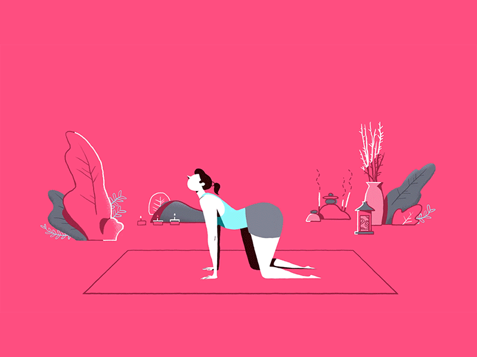
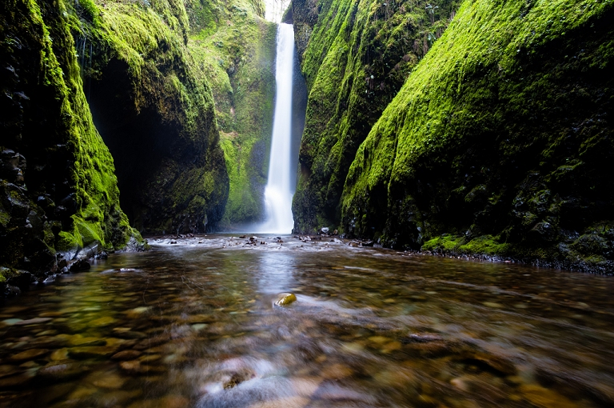

Exercicios para Ansiedade
Muitas vezes, as pessoas têm crises de ansiedade e não sabem como lidar, acabam ficando desesperadas o que acaba piorando a situação, principalmente aqueles que nunca tiveram esse tipo de crise. Pensando nisso, o Anxious tem diversos exercicios que pode te ajudar. São exercicios bem simples, que ajudam a controlar e instrui-o sobre o que fazer.
Respiração
Uma das formas de controlar a ansiedade é através de exercícios de respiração, uma vez que nestes casos, as pessoas respiram muito rapidamente e não de forma profunda, o que não oxigena o cérebro e o corpo de uma forma ideal.
Agora surgiu uma forma simples de controlar a ansiedade, um exercício de respiração que se baseia num simples GIF.
Basea-se em inspirar e expirar de acordo com a imagem
Para alguns especialistas, este GIF que surgiu no Reddit funciona realmente, uma vez que quase nos obriga a focar na respiração que está descontrolada pela ansiedade. Além do mais, este GIF faz com que a mente se foque apenas no presente, deixando os problemas do passado e os medos em relação ao futuro de parte.
YOGA
A contribuição do yoga nesse contexto de combate à ansiedade e ao estresse cotidiano é bastante rica e poderosa. Há posturas de yoga que são particularmente úteis nesse processo, sendo capazes de aliviar e até mesmo cessar alguns tipos de ansiedade.
Veja algumas das posturas abaixo e tente reproduzí-las!

Meditação
A meditação é ótima para um relaxamento profundo. Veja o passo a passo!
1. Procure um lugar em que você se sinta confortável
2. Relaxe o corpo

3. Fique quieto e silencioso, respirando fundo
4. Estabeleça um mantra
5. Acalmar a mente